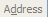

FavIcon from Pics
by
HTML Kit
New Icon
Help
?
Why ads?
:
Get up to $45 in FREE Postage at Stamps.com
use code COUPON1. expires 12/31/11
Image to Use:
Your favicon preview:

Still
All sizes
Animated
Replay
Edit
[X]
Download FavIcon Package
OR
Customize
Thank you for using FavIcon from Pics!
Share on facebook
Share on twitter
Share on email
More Sharing Services
Share http://favicon.htmlkit.com/
Donations & ads keep this service free
Shop at Amazon.com and support this site
What else you can do:
Customize colors, text, animation, iPod icons, ...
View what's in this favicon
Instantly preview your favicon in this browser
Add your site to the Favicon Gallery
Send your feedback...
Download only favicon.ico
(5.55 K)
Download only animated_favicon1.gif
(3.68 K)
To add this favicon to your site:
Hide
Download
and open favicon package. See ReadMe.txt for a copy of the following steps and more information.
Upload favicon.ico and animated_favicon1.gif to your web site. These files are in the favicon package you've downloaded.
Add following HTML tags to your web page after the <head> tag but before the </head> tag:
<link rel="shortcut icon" href="favicon.ico"> <link rel="icon" type="image/gif" href="animated_favicon1.gif">
Why ads?
:
Get a full dedicated server starting at just $37.95!
Gallery
Developer Tools
Internet Tips
Privacy
© 2011
HTML-Kit.com